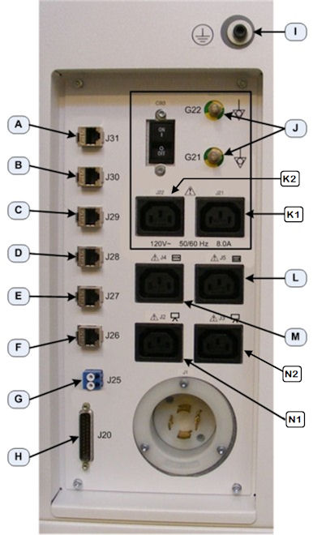

Illustration 5: Lower Rear Bulkhead Panel Connections

| Item | Destination | |
| A | RPM (J31) | RPM Gate |
| B | EKG (J30) | EKG Gate |
| C | AW (J29) | Advantage Work Station (Direct Connect) |
| D | SPARE (J28) | - |
| E | TGP (J27) | Gantry Network Cable |
| F | HSP (J26) | Main Facility Network Connection |
| G | Slip Ring (J25) | Fiber Optic Cable from Gantry |
| H | Gantry (J20) | Not used on GOC6.6 VCT |
| I | Scan Room Patient Reference Ground | - |
| J | Accessory Grounds | Accessories |
| K1 | Accessory Power (J21) | Accessories ( Injectors ) |
| K2 | Accessory Power (J22) | Accessories ( RPM ) |
| L | DVD Peripheral Tower Power | - |
| M | SPARE | - |
| N1 | Monitor Power (J2) | Right Monitor |
| N2 | Monitor Power (J3) | Left Monitor |